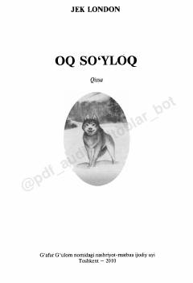

OSOq So'yloq ismli itning shafqatsiz tabiat va insonlar orasidagi hayoti haqidagi ta'sirli qissa.
Jek Londonning ushbu mashhur qissasi ona va bo'rining bolasi bo'lgan Oq So'yloq ismli itning hayoti haqida hikoya qiladi. Asar tabiat va inson o'rtasidagi murakkab munosabatlar, shafqatsiz muhitning jonivor xarakteriga ta'siri hamda mehr-muhabbatning kuchini yorqin tasvirlaydi.